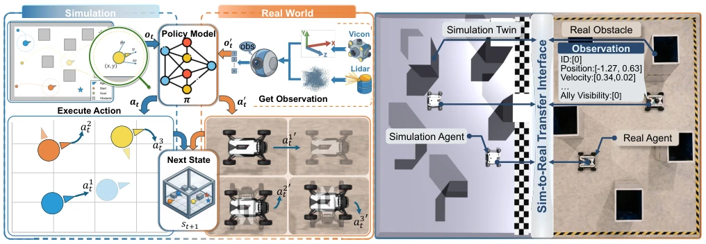
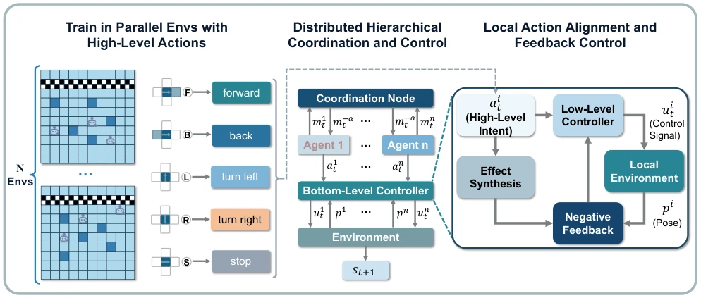
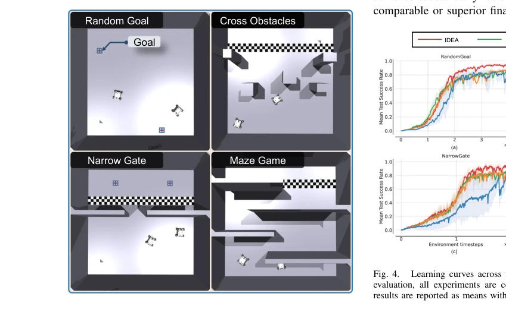
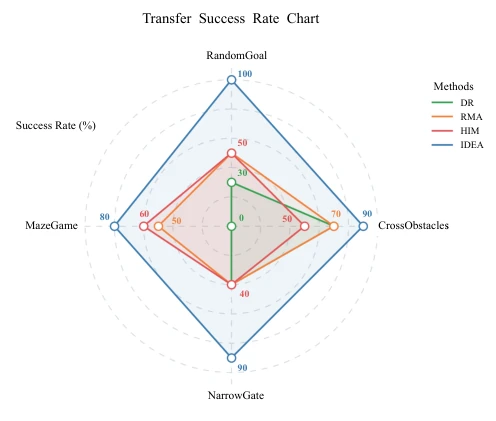
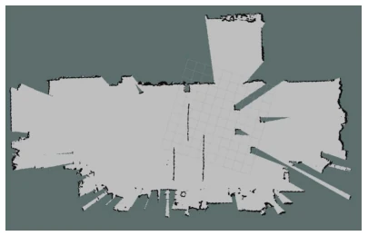

Fig. 4. Learning curves across four simulated navigation tasks. For fair evaluation, all experiments are conducted with three random seeds, and results are reported as means with 95% confidence intervals
方法Method
IDEA 框架包含三个核心模块。首先是效果对齐（Effect Alignment），将策略输出映射为离散语义动作（如前进、左转），通过底层闭环控制器将其转化为连续控制信号，利用闭环反馈约束仿真与现实的状态转移差异，理论上界定了性能差距。其次是动作同步（Action Synchronization），部署时通过通信机制（协调节点广播执行信号）确保多智能体在同一时刻步执行动作，消除时钟漂移和计算延迟带来的时序失配。最后是并行环境训练，基于 Isaac Gym 构建多几何结构环境，增强策略泛化性。整体流程为：仿真中训练高层策略 -> 现实部署时通过闭环控制器执行语义动作 -> 通信同步确保协同。
—

Fig. 1. Overview of the proposed sim-to-real transfer framework and experimental setup. (a) The execution pipeline illustrating the zero-shot deployment of the simulation-trained policy to the real world physical agents. Here, (x, y, θ, v, ω) indicate the agent’s coordinates, yaw angle, linear velocity, and angular velocity, o and a are defined in Sec. III-A. (b) A comparison of the simulation digital twin and the corresponding physical environment, highlighting the observation and execution interface bridging the reality gap.

Fig. 2. The architecture of IDEA. (a) The simulation training phase, utilizing parallel environments and discretized high-level semantic actions. (b) The distributed hierarchical control structure deployed on the multi-agent system, translating coordinated intents into bottom-level control signals. Here, m and α are defined in III-C. (c) The local action alignment module, employing a closed-loop negative feedback mechanism to ensure high-fidelity physical execution of the intended semantic actions.
实验Experiments
在四组导航任务（随机目标、穿越障碍、窄门、迷宫）上测试，对比 DR、RMA、HIM 基线。使用双 UGV 平台进行零样本迁移。指标包括成功率、碰撞率、动作执行误差及时间步差异。结果显示 IDEA 在所有任务中成功率最高，碰撞率为 0%，动作执行误差小于 5%，且智能体间时间步差异为 0。基线方法在复杂场景下碰撞率高且存在显著时序偏差。消融实验表明效果对齐和同步机制对提升鲁棒性至关重要。
—

Fig. 3. Overview of the evaluation multi-agent navigation scenarios with increasing geometric and coordination complexity.

Fig. 5. Radar chart illustrating the zero-shot transfer success rates (%) of the evaluated methods in the real world. Our proposed method demonstrates superior transferability across all tasks compared to the baselines.

Fig. 6. An example of an actual scene’s occupied grid map, taken from a MazeGame scene. The frame is taken from the baselink of one of the agents.